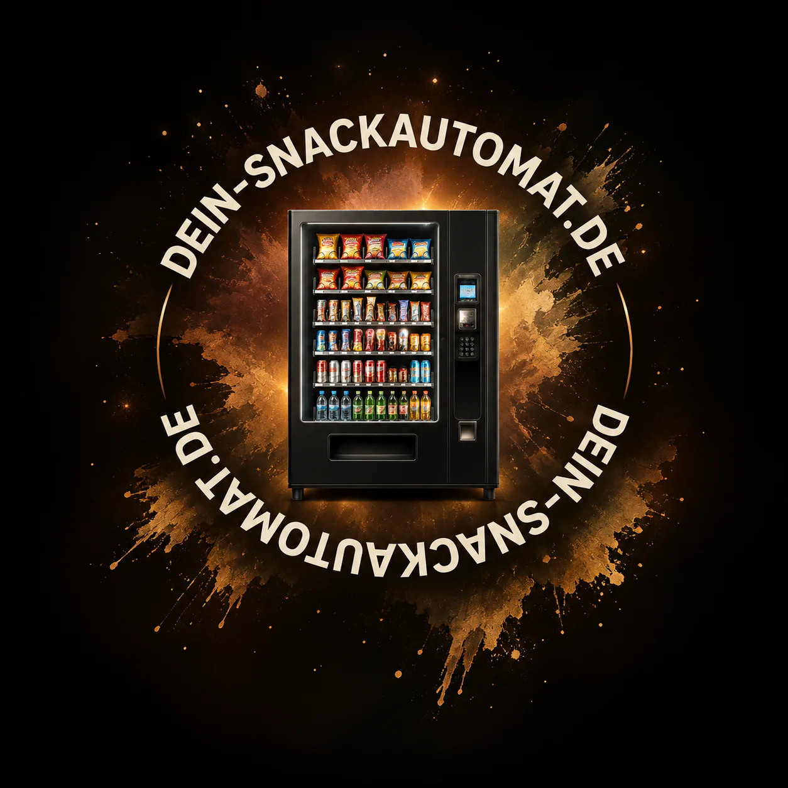

G-Snack SM6
Eine kompaktere G-Snack-Ausführung für Standorte mit begrenzter Stellfläche.
SM6 anfragen →Ein Snackautomat im Außenbereich ermöglicht den Verkauf außerhalb regulärer Öffnungszeiten. Wir beraten zu geeigneten SandenVendo-G-Snack-Modellen, zur Ausstattung und zur Standortplanung.
Outdoor-Snackautomat anfragen04101 / 601287-0 anrufen
Die folgenden Referenzwerte stammen aus dem bereitgestellten Herstellerdatenblatt „G-Snack Outdoor“ (Vendomatic/SandenVendo, S. 2). Sie gelten ausschließlich für die dort bezeichneten Outdoor-Ausführungen und ersetzen keine Prüfung des gelieferten Geräts.
| Modell | H × B × T | Nettogewicht Standard | Max. Auswahlen |
|---|---|---|---|
| SM6 OD | 1900 × 890 × 1010 mm | 325 kg | 42 |
| SM8 OD | 1900 × 1030 × 1010 mm | 350 kg | 56 |
| SMX OD | 1900 × 1200 × 1010 mm | 400 kg | 70 |
Herstellerangaben für alle drei hier aufgeführten Outdoor-Ausführungen: maximal 450 W Leistungsaufnahme, 230/240 V Anschluss, +2 bis +18 °C Innenraum und −15 bis +32 °C Umgebungstemperatur. Die maximale Leistungsaufnahme ist kein Jahresverbrauch. Bei Sonderausstattung, zusätzlichem Dach oder anderer Bauvariante müssen die realen Liefermaße separat bestätigt werden. Das Datenblatt führt einige Zubehörfunktionen ausdrücklich als Optionen.
Passende Outdoor-Ausführung anfragenWelche Baugröße passt, hängt von verfügbarem Platz, gewünschtem Sortiment und erwartetem Verkaufsvolumen ab. Varianten und Verfügbarkeit bestätigen wir im Angebot.
Eine kompaktere G-Snack-Ausführung für Standorte mit begrenzter Stellfläche.
SM6 anfragen →Mehr Stellfläche für ein breiteres Snack- und Getränkesortiment. Die gewünschte Schubladenbestückung lässt sich standortbezogen planen.
SM8 anfragen →Die breite G-Snack-Variante für vielseitige Produktauswahl und größere Standorte.
SMX anfragen →Für draußen muss die konkrete Gerätevariante vorgesehen sein. Schutz vor Witterung, Temperaturunterschieden und Fremdeingriffen ist bei der Auswahl mitzudenken.
Je nach Ausstattung sind Kartenzahlung, kontaktloses Bezahlen und Telemetrie möglich. Entscheidend ist, dass die Komponenten zum Gerät und zu deinem Betrieb passen.
Stromversorgung, stabiler Untergrund, Zugänglichkeit, Freiräume und ggf. Wetterschutz gehören in die Standortplanung. Die Ausführung sollte vor dem Kauf geprüft werden.
Bei G-Snack SM6, SM8 und SMX ist für die Raumplanung wichtig, ob bei der Outdoor-Version ein zusätzliches Dach montiert wird. Ohne montiertes Dach verwenden wir im Kiosk-Konfigurator für Indoor und Outdoor desselben Modells dieselben Gehäusemaße. Bei montiertem Dach müssen dessen Außenmaße gesondert berücksichtigt werden. Exakte Herstellermaße werden vor einem verbindlichen Angebot abgeglichen.
Für mehrere Verkaufsautomaten an einem Standort kannst du unseren 24/7-Kiosk-Konfigurator nutzen und bereits vor der Anfrage eine Raumaufteilung erstellen.
Ein Indoor-Gerät sollte nicht ohne Prüfung für den Außenbetrieb eingesetzt werden. Die technische Eignung der konkreten Outdoor-Ausführung und die Standortbedingungen müssen berücksichtigt werden.
Ja, abhängig vom Gerät und der eingebauten Zahlungstechnik können kontaktlose Zahlungen und weitere Bezahlmöglichkeiten angeboten werden.
Der Preis richtet sich nach Modell, Zustand, Ausstattung und gewünschten Zusatzfunktionen. Wir erstellen dafür ein individuelles B2B-Angebot.
Ja. Im Kiosk-Planer kannst du Geräte platzieren und die verfügbare Fläche abschätzen. Elektrische und bauliche Anforderungen müssen anschließend geprüft werden.
Schreib uns, wo der Automat aufgestellt werden soll und welche Produkte du verkaufen möchtest. Wir helfen dir, die passende Konfiguration auszuwählen.
Unverbindliches Angebot erhaltenErsatzteile finden